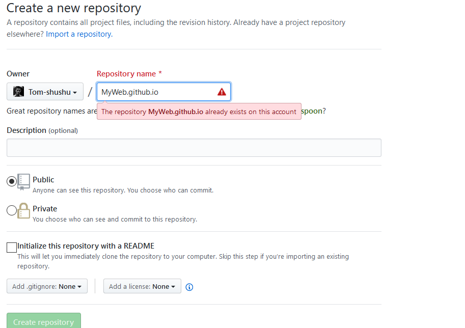
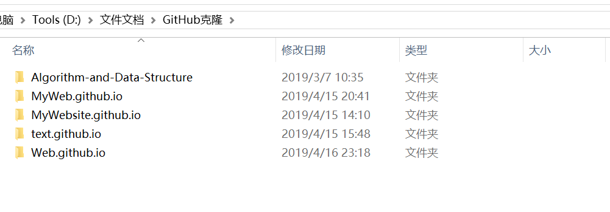
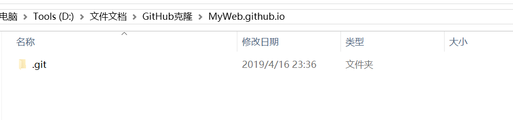
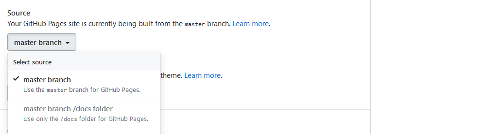
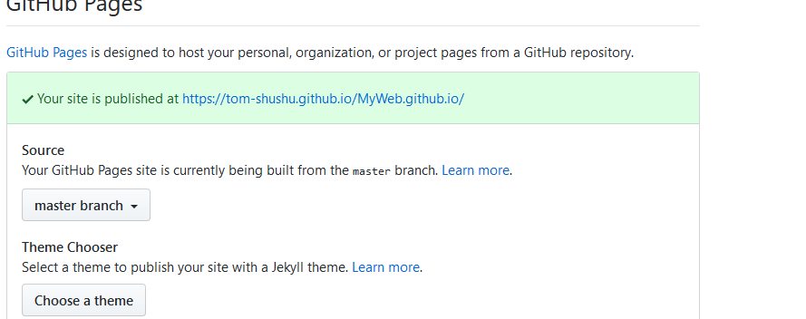

由于是手机版的所以用手机访问下面的链接体验比较好一点：
https://tom-shushu.github.io/MyWeb.github.io/
你也可以在我博客的右侧扫描我的网站二维码进行访问；
开发工具：Github Desktop ，GitHub，Hbuilder(纯静态网页)
作为一个程序员你一定有GitHub吧，如果没有你需要注册一个GitHub账号：具体步骤请按照下面步骤进行操作：
https://blog.csdn.net/qq_35246620/article/details/67636563
在GitHub上建立一个仓库如图所示：

2>.然后用Github Desktop工具将刚才建立的仓库克隆到本地，如果不了解Github Desktop工具的可以查看：
https://www.jianshu.com/p/06a960d991aa

我这里已经克隆下来了
打开MyWeb.github.io:里面就只有一个.git文件

关于编码这里我就步详细介绍了，有点关公面前耍大刀，哈哈。如果觉得我这个网站还比较炫酷你可以到我的GitHub上去免费下载：
https://github.com/Tom-shushu/MyWeb.github.io
将我的信息更改一下就可以了。
将整个项目拷贝到刚才克隆下来的仓库之中，用Github Desktop进行上传即可；

之后它会给你生成一个访问网址，它就是你的网站访问网址：

点击就可访问了